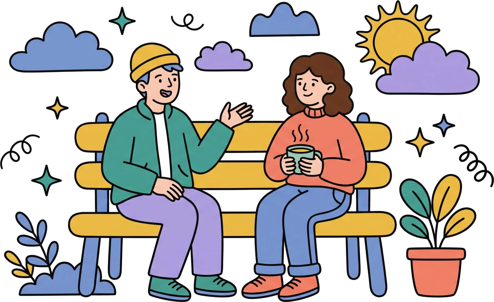
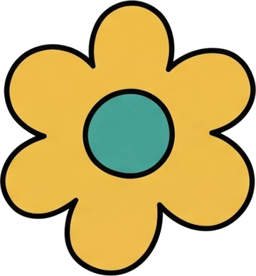
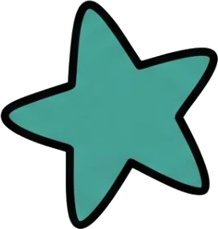
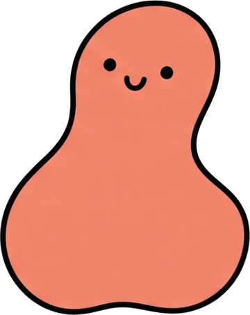
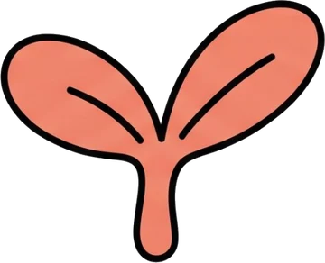

01
Цена видна сразу
Стоимость сессии указана в анкете психолога. После записи ничего не доплачивается.
Многие годами откладывают поход к психологу. Не потому, что помощь не нужна, а потому что первый шаг слишком сложный. Мы хотели сделать его проще – и вот что из этого получилось.



Обратиться к психологу – уже смелый шаг. Мы посмотрели, что чаще всего мешает его сделать, и постарались убрать эти преграды.
Поэтому и «Рядом»: помощь – на расстоянии одного сообщения
Клиент ищет помощь, психолог её оказывает, модератор следит, чтобы всё было честно и безопасно.


Пять этапов, которые проходит каждый психолог до первой сессии на «Рядом».
Из 100 заявок проходят 7
Психолог присылает анкету, диплом о высшем психологическом образовании и сертификаты.
Модератор сверяет документы и опыт: в каталог попадают специалисты с практикой от 3 лет.
Видеовстреча с психологом-экспертом: как специалист работает и с какими темами.
Психолог разбирает учебный случай – так видно, как он ведёт сессию на практике.
Анкета появляется в каталоге с отметкой «Документы проверены». Дальше следим за отзывами.
Стоимость сессии указана в анкете психолога. После записи ничего не доплачивается.

Платите за каждую встречу отдельно. Не нужно заранее покупать курс из десяти сессий.
Подбор только подсказывает. К кому идти и когда остановиться, решаете вы.

Анкеты без сложных терминов: психолог пишет, с чем помогает и как проходит работа.
Заполните анкету – модератор проверит документы, и профиль появится в каталоге. Расписание, клиенты и чат – в одном кабинете.


Ответим в чате поддержки каждый день с 9:00 до 21:00. Можно спросить про запись, оплату или предложить, что улучшить в сервисе.